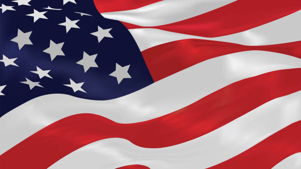

Service
2020 Presidential Election

I volunteered to work at the polls during the 2020 Presidential Election.
My duties included guiding voters through the process and collecting ballots.
This was a great way to assist in the political process, since I was not able to vote at the time.
While I was at the Galveston campus my freshman year, I was part of the Contributions Committee for Big Event.
I helped raise money by organizing fundraiser events on campus and cold-calling local businesses for donations.
Because of the money raised, all students who participated in Big Event at Galveston got free breakfast and lunch, as well as a T-shirt.